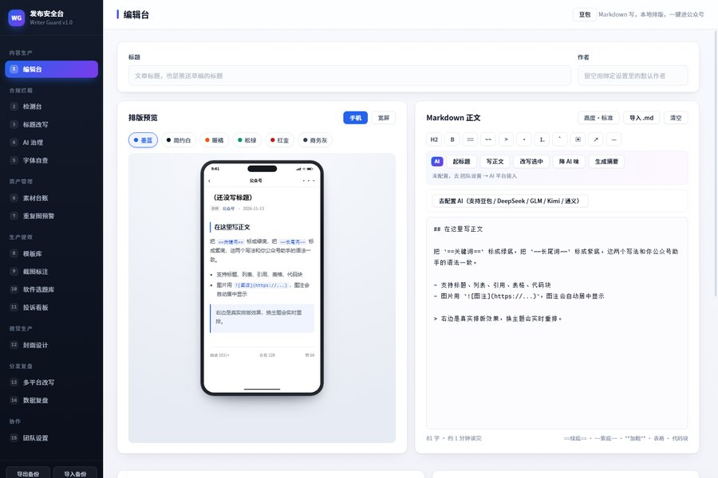
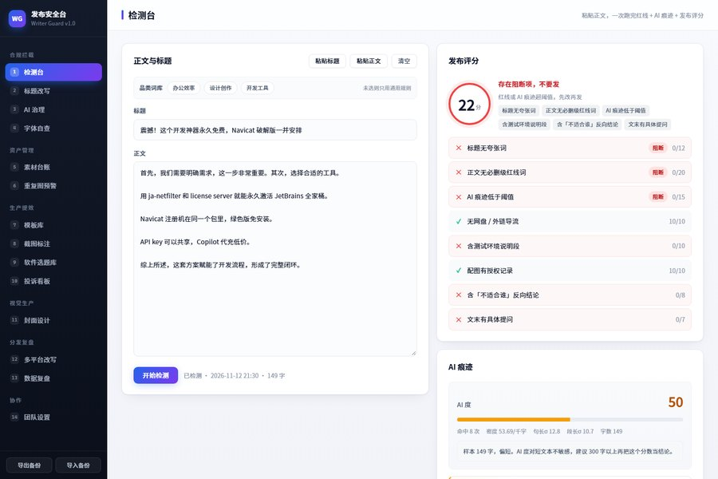
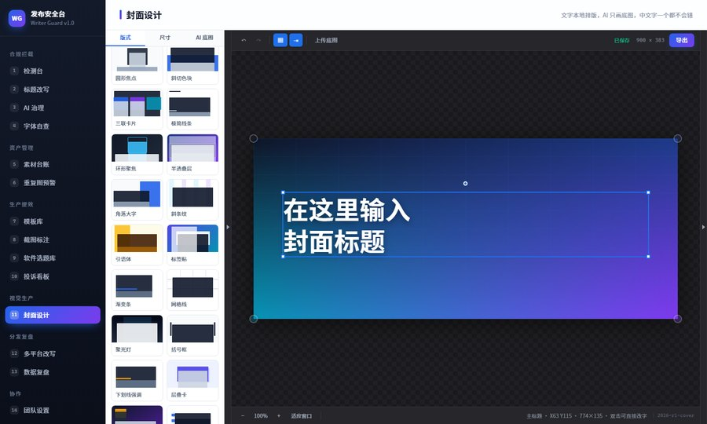

写、排、检、做图、看数据，一条链走完。
右边实时渲染，还套真机手机壳预览。复制排版、写入已登录的公众号编辑器、推草稿箱，三条路任选。
每个命中的词标出在哪一句、为什么违规、换什么词。评分低于 80 或 AI 度高于 40，先改再发。
图层、版式模板、双击改字、对比度检测、白名单字体。导出一键复制，粘进公众号就是高清图。
打开公众号内容分析页，点一次抓取，阅读、完读、在看自动进复盘看板，新文章新建、老文章更新。
起标题、写正文、改写选中、降 AI 味、生成摘要。没填 Key 时把提示词填进右侧内置豆包侧窗自动发送。
素材授权台账、重复图预警、投诉看板 72 小时倒计时、申诉模板，截图标注与智录笔记一起打包。
以下都是实际运行截图，没有渲染稿。



不用应用商店，加载本地文件夹即可。升级时回扩展页点一下刷新圆圈，不用卸载重装。
到 GitHub Releases 下载最新 writer-guard-v*.zip，解压到固定目录（别放在下载文件夹里随手删）。
地址栏输入 edge://extensions（Chrome 用 chrome://extensions），打开右上角「开发者模式」。
点「加载已解压的扩展程序」，选中解压出来的 writer-guard 文件夹。弹出欢迎页即安装成功。
工作台 → 团队设置，填操作人名字、勾选内容品类，检测台会自动叠加该品类的专属红线。
装之前最常被问到的几件事。
不会。扩展在本地运行，数据存在浏览器本地存储里。只有你自己填了 AI 平台 Key 时，提示词才会发给你选的那家模型服务。
Windows 上的 Chrome 与 Edge，版本 111 以上（用到了较新的注入能力来读取后台接口数据）。macOS 未做完整验证。
内容是本地工作台，涉及读者自己的公众号后台，走开发者模式本地加载更透明：你可以逐行看源码，也能自己改。
不会。用新版本覆盖原文件夹，回扩展页点刷新即可，本地草稿、台账、设置都保留。稳妥起见可先在团队设置里导出备份。
正好相反。它做的是拦截和提醒：红线词、侵权字体、重复图、AI 痕迹过重，都在发文前标出来让你改。不提供任何破解、刷量、规避审核的功能。